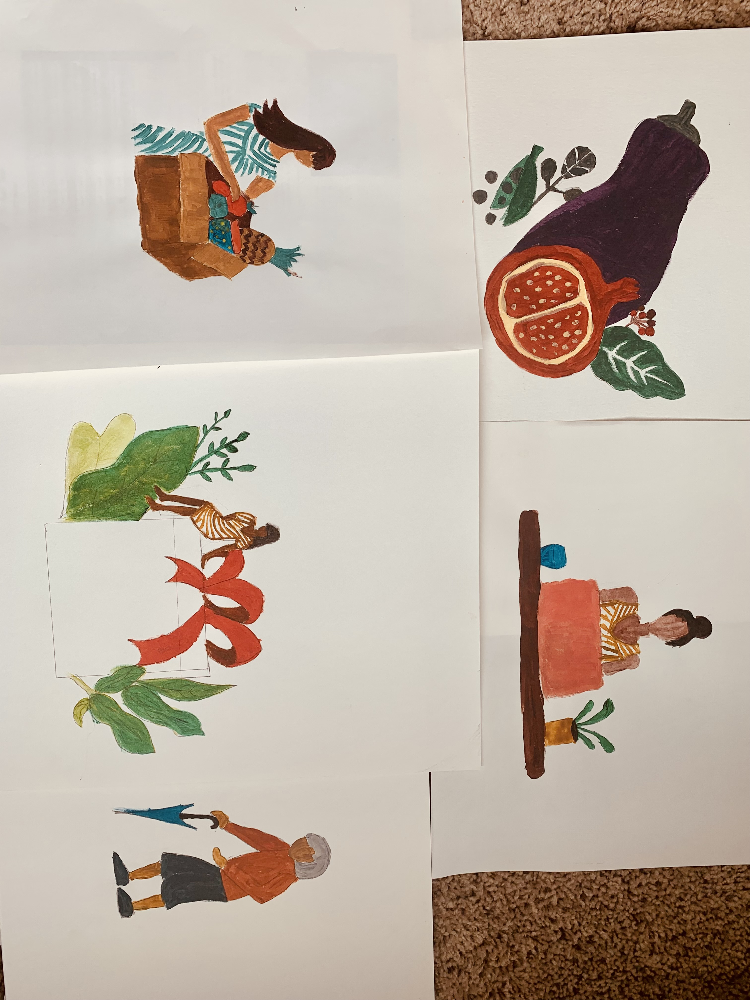

FoodThrive
Hook
Design a Food Truck system and community fridge system that will help take the food/groceries donated in/by grocery stores to low income communities.

Problem Statement
For this project, I was inspired by a video by Clint Smith called- “Place Matters”. In this video, he describes the daily struggles by his students. Some of the things he highlighted were dirty neighborhood, gun violence, lack of grocery stores, and hereditary diseases due to poor nutrition. Digging deeper into this, I found out that most of the food that is donated to the low income communities is canned, processed, and low in nutritional value. Consumption of just these items without the healthier food options like fruits, vegetables, milk, and meat can lead to an overall poor diet. Most of the food banks use non-perishable items to have some shelf life as it takes time to make the food reach from the donor to the consumer.
I found that there are some food banks that provides fresh produce to such neighborhood. But, I also found some gaps in their systems that I want to help these organizations' using my brand FoodThrive.
Working towards a solution
How am I going to address this issue?
I want to address this issue by making a food truck and community fridge system that uses fresh donated food from grocery stores to reach poor neighborhoods at a nominal price. I want to design a website for this system that will help the donors find various ways to help easily. This website will also help the consumers who would like to utilize these resources. The website will include a page that will let the users print relevant information for the people without internet access.
How am I filling the gaps in the system used by similar organizations in my community?
I found out that the food truck systems like “Meals on Wheels” that take food from the food banks to further help their customers deliver to the homes in need. This makes a gap for the homeless to access these resources. FoodThrive will address this issue by finding areas that have homeless people and serving them.
Another issue that I found was that the homeless do not have access to stoves, refrigerator and utensils, they will need to be given either fully cooked meals or items like fruits, bread, bakery items, vegetables that can be eaten raw, canned items etc.
Another gap that I found was the lack of knowledge about the nutritional aspect in their consumers. I was told that most people like to pick high sugar food items instead of fresh produce that is offered. This was due to the poor food habits that they have. This can be fixed by providing them with some health and nutrition resources.
Research
To understand how similar organizations work and what are the gaps present in such organizations, I started working closely with a Food Drive called Community Food Share located in Broomfield. Community Food Share serves all kinds of food items that includes fresh fruit, vegetable, dairy, meat and packaged food. I talked with their team to find out the issues that they face and where would they like to make some changes in their system. We found two problem areas in their system-
- Lack of Accessibility of food by the homeless people
- Lack of nutrition knowledge in the consumers
As a possible solution, I would like FoodThrive to have mobile food trucks that can spot and serve the areas with homeless people. They can be delivered boxes specially made for them. Also, the printed flyers with the location details and maps can be given to them for spreading the word as such people might not have access to internet.
For the nutrition part, FoodThrive will have nutrition slideshows/videos, flyers, posters and webpages to explain the benefits of following a healthy diet and how it can also help with preventing chronic diseases. I collaborated with Community Food Share nutrition program manager Gabriela and public health intern Emma, to gather information on effects of sodium, fat, sugar and fiber in our daily diet.
I have compiled these resources as well as some inspirational websites here
Moodboard

Making Patterns using p5.js
I made patterns using simple illustrations of fruits, vegetables, dairy products as well as trash to be used through the website. To keep getting various patterns one needs to keep clicking the play button until they get the desired results.
Here is the link to-
VegetablesFruits
Dairy Products
Trash
Hand Drawn Illustrations
I made some illustrations using acrylic colors on paper to combine with the patterns that I made on p5.js. After combining those I added a little textured effect on photoshop to add some visual interest.

Initial Website Iterations
I made some initial website designs that included the content, menu bar, illustrations, videos and printable PDFs based on the brand guidelines that I created in the start.
I had a predominant usage of p5.js patterns here. I reduced the presence of these patterns in the next stage. I made these illustrations using acrylic colors and scanned those to add to the website. The main page explained what the organization does, how it does it and what do they accept. The Spread the word page is supposed to have a link to a printable PDF to spread the word to those who do not have internet access that includes information for the donors and consumers.

Nutrition Video
FoodThrive_Nutrition_1.mp4 from Sonal Singh on Vimeo.
Feedback from experts, peers and professor
- Food truck design is beautiful | has depth, texture, contrast, and makes sense from a UX perspective | layered and complex yet simple experience
- Great aesthetic of the website | the font usage and distribution could be a bit tighter | Headlines feel a bit too formal and in-your-face when it's in caps
- A bit too much design emphasis on the sitemap | Might be a hindrance to navigate the site
- If I wanted to participate in this program as a low-income community member, I'd want to know if there are any restrictions. Can anyone come or are there certain guidelines you're following to determine who gets the food?
- Under "sign up for our newsletter," suggest what kind of content they can expect
- Provide an opportunity to donate online
- The highway part of the video is not cohesive with the rest of the video parts
Final Prototype
After making several changes based on the feedback that I received from different sources, here is my final prototype of the website design.
Conclusion
- My problem statement changed as I interacted with people that led me to evolved solutions.
- The research on existing similar organizations helped me find the solutions that already exist in the market and what gaps they have.
- I also researched various current website layout and styling to find current trends
- Revised my work in all stages based on the feedback and discussions I had and realized the changes made the end piece a lot more impactful
- Overcame some roadblocks by brainstorming ideas on paper
- Combined various methods to accomplish the final product that included JavaScript library p5.js, hand illustration, design theory, motion design